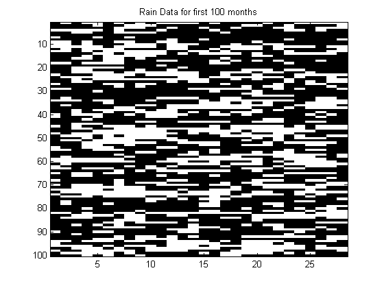
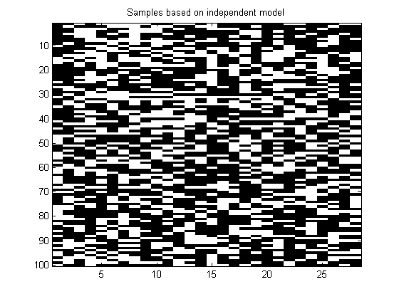
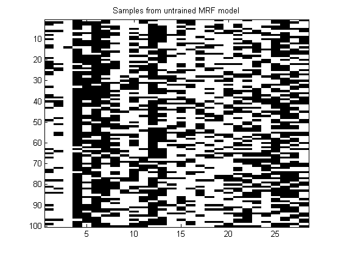
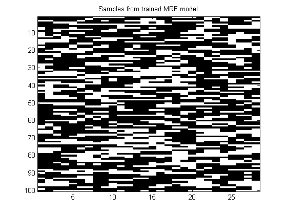

Contents
Demonstrate training a chain-structured MRF
Based on http://www.cs.ubc.ca/~schmidtm/Software/UGM/trainMRF.html
% This file is from pmtk3.googlecode.com
Get data
setSeed(0); load rain.mat % X is 1059*28 y = X+1; % Convert from {0,1} to {1,2} representation % Plot what data looks like figure; imagesc(y(1:100,:)); colormap(gray); title('Rain Data for first 100 months'); % Plot marginal fit % Compute marginal of raining on any day p_rain = sum(y(:)==2)/numel(y) % Plot what independent samples would look like figure; imagesc(p_rain > rand(100,28)); colormap(gray); title('Samples based on independent model');
p_rain = 0.411506812356671 
Create chain model
nNodes = size(y,2); adj = chainAdjMatrix(nNodes); nStates = 2*ones(1,nNodes); model = mrf2Create(adj, nStates, 'method', 'Chain'); % Sample from model with random params nSamples = 100; samples = mrf2Sample(model, nSamples); figure; imagesc(samples); colormap(gray); title('Samples from untrained MRF model');
Fit model
model = mrf2Train(model, y);
samples = mrf2Sample(model, nSamples);
figure;
imagesc(samples); colormap(gray);
title('Samples from trained MRF model');
